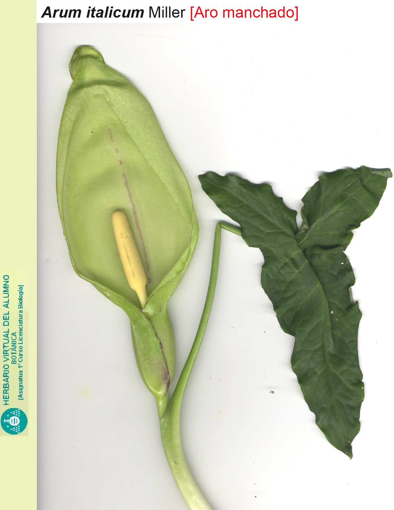

Arum italicum – O Jarro-Itálico: Beleza e Mistério das Florestas Mediterrâneas
Arum italicum, conhecido como jarro-itálico ou jarro-bravo, é uma planta da família Araceae, nativa do sul da Europa, norte da África e partes da Ásia Ocidental. Seu ciclo de vida geófito permite que sobreviva por meio de tubérculos subterrâneos, garantindo resistência a condições adversas.
Características Morfológicas
- Folhas: Basais, em forma de seta, verdes brilhantes, frequentemente com manchas brancas.
- Flores: Inflorescência composta por um espádice envolto por uma espata verde-amarelada.
- Frutos: Bagas vermelhas brilhantes agrupadas em infrutescências.
- Raízes: Tubérculos rizomatosos que armazenam nutrientes.
Ecologia e Importância Ambiental
Desempenha um papel ecológico relevante em ecossistemas mediterrâneos:
- Atrai moscas saprófitas por meio de odores que imitam matéria orgânica em decomposição.
- Serve de habitat para diversas espécies de artrópodes.
- Resiste a períodos de seca e variações térmicas, adaptando-se a diferentes ambientes.
Usos Econômicos e Aplicações
- Ornamental: Cultivado em jardins devido à sua folhagem decorativa.
- Pesquisa farmacológica: Estudos investigam seus compostos bioativos e propriedades citotóxicas.
⚠️ Toxicidade e Potenciais Aplicações Medicinais
- Arum italicum contém compostos tóxicos, como saponinas e alcaloides, que podem causar sintomas graves se ingeridos, como inchaço da língua, vômito sanguinolento e diarreia.
- Estudos indicam atividade citotóxica contra células cancerígenas, com efeitos notáveis em células de câncer gástrico e pulmonar.
- Extratos da planta demonstraram efeitos antimicrobianos e antibiofilme.
- Estudos recentes sugerem potencial efeito antidiabético, inibindo enzimas digestivas como α-glucosidase e α-amílase.
Importância Cultural e Simbólica
- Uso histórico em rituais e práticas medicinais na etnobotânica.
- Presença em florestas mediterrâneas molda a percepção ambiental das comunidades locais.
Referências
- Ulusoylu & Gürbüz (2022). The Cytotoxicity and the Antimicrobial Activities of Arum italicum Miller. J. Res. Pharm. DOI: 10.3390/jrespharm1082
- Rechek et al. (2023). A Comparative Analysis between the Phenolic Content... DOI: 10.3390/ijpb14020041
- Hacioglu et al. (2021). In Vitro Antimicrobial... DOI: 10.3390/farmacia521
- Kozuharova et al. (2023). Bioactive Compounds... DOI: 10.1007/978-3-031-29006-0_6-1
- Imagem de herbario.uniovi.